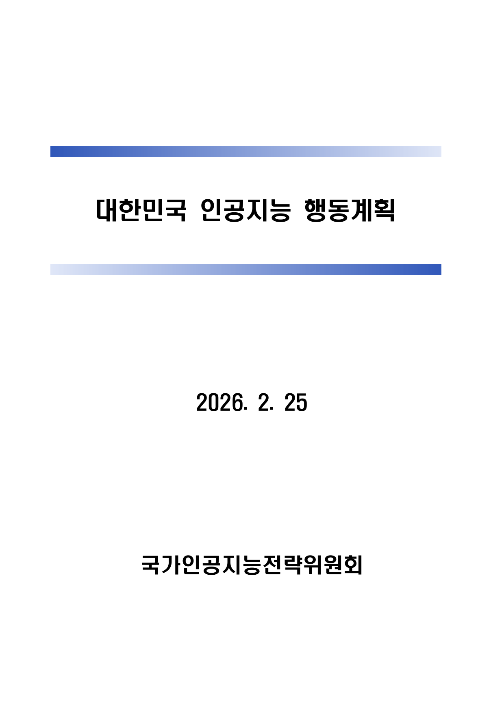
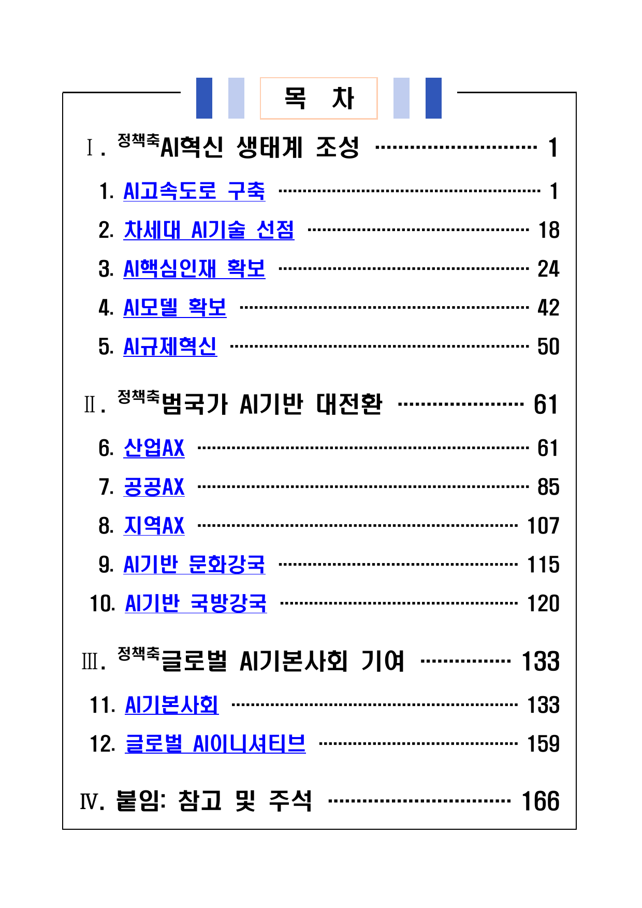
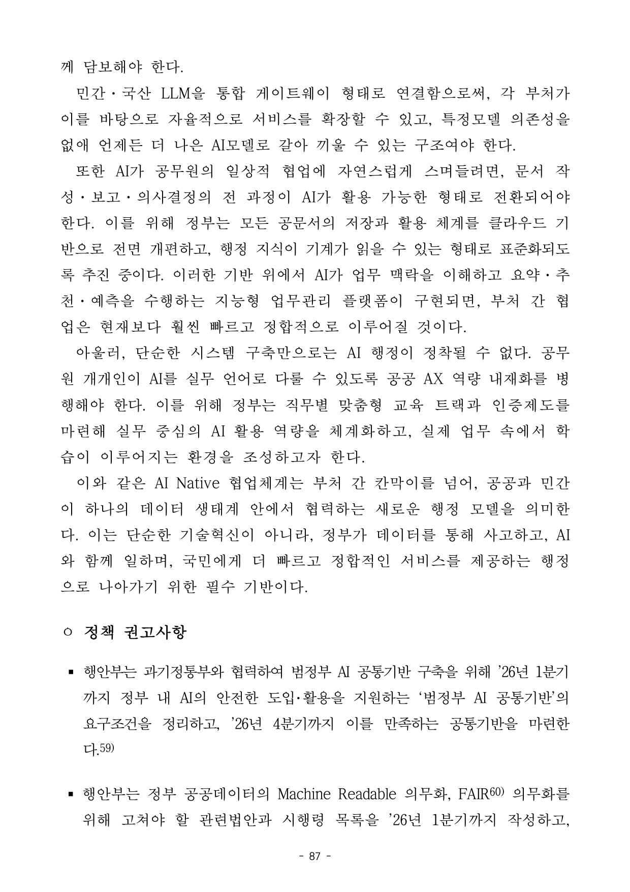
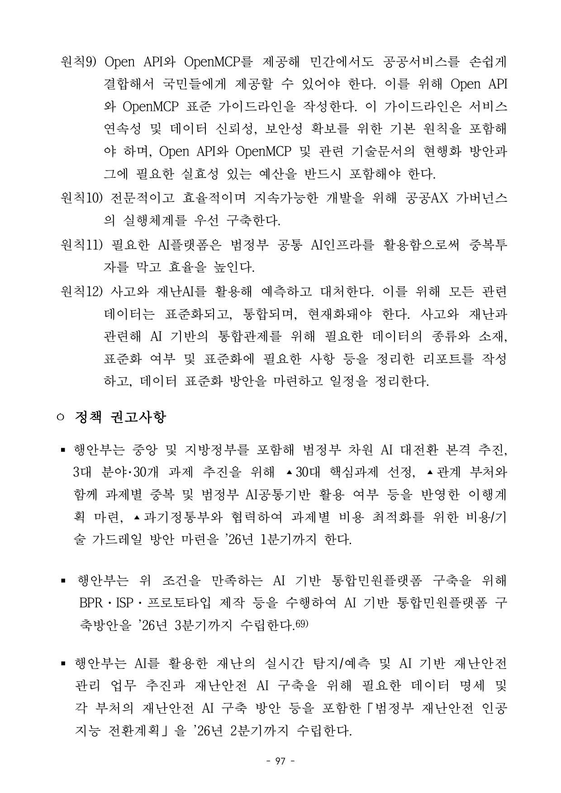

한국 공공 API를 자연어로 만나는
시민 대화형 AI 플랫폼.
╔════════════════════════════╗
║ $ kosmos ║
║ ▸ session: citizen-001 ║
║ ▸ adapters: 24 ║
║ ▸ primitives: 4 ║
║ ▸ runtime: K-EXAONE-236B ║
╚════════════════════════════╝
│
◆ tool loop ◆
│
┌──────┴──────┐
▼ ▼
[Layer 1] [Layer 3]
public OAuth/PIPA
한국 공공 API 시민 대화형 플랫폼 발표.
개요부터 일정까지 6개 챕터 + 34 frame 시연 캡쳐.
시민은 어느 부처가 어떤 API를 운영하는지 알 필요 없이, 자연어 한 줄로 5,000+ 한국 공공 API를 호출할 수 있습니다.
lookup · submit · verify · subscribe.“DX는 충분하다. 지금 필요한 것은 분산된 공공 인프라를 단일 지능으로 묶는 AX 레이어다.”

시민이 처한 위기 상황 3가지. 단일 자연어 입력 → KOSMOS가 3-4 부처 API를 동시 호출 → 통합 답변 + 다음 행동 권고.
시민 자연어 입력 → 쿼리엔진 BM25 검색 → 권한 게이트 → 어댑터 응답 합성 → KOSMOS 통합 답변. 모든 frame은 실제 KOSMOS TUI 컴포넌트 렌더 결과.
╭──────────────────────────────────────────────────────────────────────────────────────────────────╮ │ │ │ ✻ 시민 │ │ 엄마가 갑자기 쓰러지셨어요. 119 부르고 가장 가까운 응급실 어디예요? │ │ │ ╰──────────────────────────────────────────────────────────────────────────────────────────────────╯
┌──────────────────────────────────────────────────────────────────────────────────────────────────┐ │ ⏺ 단계 2/5 · 쿼리엔진 → 도구 시스템 BM25 검색 (4 부처 후보) │ └──────────────────────────────────────────────────────────────────────────────────────────────────┘ 1. nfa_emergency_info_service 119 응급 신고 / 출동 안내 2. hira_hospital_search 병의원 + 응급실 검색 3. nmc_emergency_search 실시간 응급실 가용 병상 (L3 인증) 4. kma_weather_alert_status 도로 결빙 / 강풍 특보 5. resolve_location 시민 위치 → 좌표 (kakao/juso/sgis)
┌──────────────────────────────────────────────────────────────────────────────────────────────────┐ │ ⏺ 단계 3/5 · 권한 게이트 — NMC 실시간 병상 (Layer 3) │ └──────────────────────────────────────────────────────────────────────────────────────────────────┘ ╭──────────────────────────────────────────────────────────────────────────────────────────────────╮ │ │ │ ⓷ Layer 3 — 본인 인증 필요 │ │ 도구: nmc_emergency_search (실시간 병상) │ │ 사유: 의료기관 가용 정보 · PIPA §26 수탁자 │ │ │ │ [Y] 한 번만 허용 [A] 세션 자동 [N] 거부 │ │ → 영수증: rcpt-emergency-2026-04-26-7B3F │ │ │ ╰──────────────────────────────────────────────────────────────────────────────────────────────────╯
┌──────────────────────────────────────────────────────────────────────────────────────────────────┐ │ ⏺ 단계 4/5 · 어댑터 실행 → 다부처 응답 합성 │ └──────────────────────────────────────────────────────────────────────────────────────────────────┘ ┌──────────────────────────────────────────────────────────────────────────────────────────────────┐ │ 추천 응급실 강남세브란스병원 응급의료센터 │ │ 거리 / 예상 도착 8분 (2.4 km, 차량) │ │ 실시간 가용 병상 3 / 28 (NMC 갱신 1분 전) │ │ 진료과 응급의학 · 심혈관 · 신경과 24시간 │ │ KMA 도로 기상 ⚠ 빙판 결빙 주의보 발효 중 (서울 전역) │ │ 119 신고 자동 호출 가이드 — 시민 위치 좌표 첨부됨 │ └──────────────────────────────────────────────────────────────────────────────────────────────────┘
╭──────────────────────────────────────────────────────────────────────────────────────────────────╮ │ │ │ ✻ KOSMOS · 응답 (4 부처 통합) │ │ 1. 119 즉시 호출 — 위치 좌표 자동 전달 가능 (탭하여 호출). │ │ 2. 가장 가까운 응급실: 강남세브란스 (8분, 2.4 km). │ │ · 가용 병상 3 / 28 · 응급·심혈관·신경과 24시간 │ │ 3. ⚠ 빙판 주의 — 도로 결빙 경보 발효, 보호자 차량 이동 시 감속 필수. │ │ 권한 영수증: rcpt-emergency-2026-04-26-7B3F (NMC L3 사용) │ │ 데이터 출처: NFA 119 · HIRA · NMC · KMA · 카카오 로컬 │ │ │ ╰──────────────────────────────────────────────────────────────────────────────────────────────────╯
시민 자연어 입력 → 쿼리엔진 BM25 검색 → 권한 게이트 → 어댑터 응답 합성 → KOSMOS 통합 답변. 모든 frame은 실제 KOSMOS TUI 컴포넌트 렌더 결과.
╭──────────────────────────────────────────────────────────────────────────────────────────────────╮ │ │ │ ✻ 시민 │ │ 회사가 갑자기 망했어요. 실업급여 받고 새 직장도 알아봐야 하고, 임대주택 우선순위까지 신청하고 │ │ 싶어요. │ │ │ ╰──────────────────────────────────────────────────────────────────────────────────────────────────╯
┌──────────────────────────────────────────────────────────────────────────────────────────────────┐ │ ⏺ 단계 2/5 · 쿼리엔진 → 도구 시스템 BM25 검색 (4 부처 fan-out) │ └──────────────────────────────────────────────────────────────────────────────────────────────────┘ 1. mock_unemployment_benefit 고용노동부 실업급여 자격 / 신청 2. mock_worknet_jobsearch 워크넷 직업훈련 + 재취업 매칭 3. mock_verify_mydata 마이데이터 — 소득 정보 자동 인증 4. mock_lh_priority_apply LH 임대주택 우선순위 (실직 가산점) 5. mock_welfare_application_submit_v1 정부24 통합 신청
┌──────────────────────────────────────────────────────────────────────────────────────────────────┐ │ ⏺ 단계 3/5 · 마이데이터 인증 — 소득 정보 자동 조회 (AAL2) │ └──────────────────────────────────────────────────────────────────────────────────────────────────┘ ╭──────────────────────────────────────────────────────────────────────────────────────────────────╮ │ ✔ Verified │ │ Identity 홍길동 (1985년생) · 인증 완료 │ │ Level 마이데이터 v240930 │ │ NIST AAL2 │ │ Family mydata │ ╰──────────────────────────────────────────────────────────────────────────────────────────────────╯
┌──────────────────────────────────────────────────────────────────────────────────────────────────┐ │ ⏺ 단계 4/5 · 4 부처 응답 합성 → 자격 / 우선순위 / 다음 단계 │ └──────────────────────────────────────────────────────────────────────────────────────────────────┘ ┌──────────────────────────────────────────────────────────────────────────────────────────────────┐ │ 실업급여 자격 ✓ 적격 — 고용보험 18개월 가입 (12개월 이상) │ │ 예상 수급액 월 184만원 × 240일 (총 1,472만원) │ │ 직업훈련 추천 IT 5종 · 디자인 3종 · 사무직 7종 (워크넷) │ │ LH 임대주택 가산점 +20점 (실직자 우선순위) │ │ 신청 마감일 실직 후 14일 내 고용센터 방문 필수 │ │ 소득 인증 마이데이터 자동 인증 완료 — 별도 서류 불요 │ └──────────────────────────────────────────────────────────────────────────────────────────────────┘
╭──────────────────────────────────────────────────────────────────────────────────────────────────╮ │ │ │ ✻ KOSMOS · 응답 (4 부처 통합 + 다음 단계) │ │ ✓ 실업급여 신청 가능: 월 184만원 × 240일 (총 1,472만원) │ │ ✓ LH 임대주택 우선순위 +20점 부여 (실직 가산) │ │ ✓ 추천 직업훈련: IT 5종 · 디자인 3종 · 사무직 7종 │ │ ✓ 마이데이터 소득 인증 완료 — 종이 서류 불요 │ │ 다음 단계 (시간순): │ │ ① 14일 내 가까운 고용센터 방문 (위치 안내 →) │ │ ② 워크넷 직업훈련 신청 (자격 인정 후 즉시) │ │ ③ LH 임대 신청 (다음 분기 선정 cycle) │ │ │ ╰──────────────────────────────────────────────────────────────────────────────────────────────────╯
시민 자연어 입력 → 쿼리엔진 BM25 검색 → 권한 게이트 → 어댑터 응답 합성 → KOSMOS 통합 답변. 모든 frame은 실제 KOSMOS TUI 컴포넌트 렌더 결과.
╭──────────────────────────────────────────────────────────────────────────────────────────────────╮ │ │ │ ✻ 시민 │ │ 전세사기 당했어요. 보증금 못 돌려받을 것 같아요. 어떻게 해야 해요? │ │ │ ╰──────────────────────────────────────────────────────────────────────────────────────────────────╯
┌──────────────────────────────────────────────────────────────────────────────────────────────────┐ │ ⏺ 단계 2/5 · 쿼리엔진 → 도구 시스템 BM25 검색 (4 트랙 동시) │ └──────────────────────────────────────────────────────────────────────────────────────────────────┘ 1. mock_hug_warranty_claim HUG 전세보증보험 청구 2. mock_lease_dispute_apply 주택임대차분쟁조정위원회 3. mock_legal_aid_consult 대한법률구조공단 무료 상담 4. mock_traffic_fine_pay_v1 경찰청 사기 신고 (mock) 5. mock_verify_gongdong_injeungseo 공동인증서 — 신청 본인 확인
┌──────────────────────────────────────────────────────────────────────────────────────────────────┐ │ ⏺ 단계 3/5 · 권한 게이트 — L2 인증 (4 부처 동시 신청) │ └──────────────────────────────────────────────────────────────────────────────────────────────────┘ ╭──────────────────────────────────────────────────────────────────────────────────────────────────╮ │ │ │ ⓶ Layer 2 — 본인 인증 필요 │ │ 도구: HUG · 분쟁조정 · 법률구조 · 경찰 (4 트랙) │ │ 인증 옵션: 공동인증서 · 금융인증서 · 간편인증 │ │ │ │ [Y] 한 번만 허용 [A] 세션 자동 [N] 거부 │ │ → 영수증: rcpt-jeonse-2026-04-26-9C2D │ │ │ ╰──────────────────────────────────────────────────────────────────────────────────────────────────╯
┌──────────────────────────────────────────────────────────────────────────────────────────────────┐ │ ⏺ 단계 4/5 · 4 부처 응답 합성 → 동시 트랙 권고 │ └──────────────────────────────────────────────────────────────────────────────────────────────────┘ ┌──────────────────────────────────────────────────────────────────────────────────────────────────┐ │ ① HUG 보증금 반환 ✓ 청구 가능 — 보증보험 가입 확인 │ │ ② 임대차분쟁조정 신청 가능 (서울지부 — 강남구) · 7~14일 결정 │ │ ③ 법률구조공단 무료 상담 — 내일 14시 예약 가능 │ │ ④ 형사 신고 (경찰) 사기죄 + 가해자 출국금지 신청 동반 권고 │ │ 예상 보증금 회수 85% 확률 (HUG 보증) · 60일 이내 │ │ 필요 서류 임대차계약서 · 보증보험증 · 통장사본 (자동첨부) │ └──────────────────────────────────────────────────────────────────────────────────────────────────┘
╭──────────────────────────────────────────────────────────────────────────────────────────────────╮ │ │ │ ✻ KOSMOS · 응답 (4 부처 통합 · 3 트랙 동시 권고) │ │ 동시에 진행하셔야 할 3 트랙: │ │ ① HUG 보증금 반환 청구 — 오늘 신청, 60일 이내 회수 (85% 확률) │ │ ② 임대차분쟁조정 신청 — 강남지부, 7~14일 결정 │ │ ③ 형사 신고 + 가해자 출국금지 — 가까운 경찰서, 즉시 │ │ 먼저 받으실 무료 법률 상담: │ │ → 대한법률구조공단 강남지부 — 내일 14시 예약 (자동 등록 가능) │ │ 필요 서류 자동 첨부 완료 (임대차계약서 · 보증보험 · 통장) │ │ 권한 영수증: rcpt-jeonse-2026-04-26-9C2D │ │ │ ╰──────────────────────────────────────────────────────────────────────────────────────────────────╯
개발자 코딩 도구 루프(개발자 하네스) → 시민 공공 API 도구 루프(KOSMOS). 6 Layer 구조 + K-EXAONE LLM stack.
LGAI-EXAONE/K-EXAONE-236B-A23Bgen_ai.model.id + kosmos.prompt.hash
CC 계열 개발자 도구가 개발자 중심 코딩 하네스라면, KOSMOS는
국민·국가·국가행정시스템 작업 하네스입니다.
.references/[migration-source]/ 6-layer 1:1 보존.
OECD OURdata 1위, data.go.kr 5,000+ API. 그러나 시민은 어느 부처가 어떤 API를 운영하는지 모르고, 단일 챗봇은 부처 횡단을 못 한다.


출처 — 행안부 공공데이터 활용 현황 (2024) · OECD OURdata Index 2023 · 국가인공지능전략위원회 AI 행동계획 (2026.2.25)
정부24·CLOVA·카카오i — 모두 단일 부처 안에 머무르는 FAQ 봇. 시민 위기 시나리오는 부처 횡단을 요구한다.
| 서비스 | 방식 | 부처 횡단 | 실시간 API | 도구 루프 | PIPA §26 |
|---|---|---|---|---|---|
| 정부24 AI 챗봇 | 단일 부처 / FAQ | ✗ | ✗ | ✗ | — |
| 네이버 CLOVA 공공 | NLP 안내봇 | ✗ | ✗ | ✗ | — |
| 카카오 i 공공 | NLP 안내봇 | ✗ | ✗ | ✗ | — |
| KOSMOS v0.1-alpha | K-EXAONE 도구 루프 | ✓ 4 부처 동시 | ✓ 24 어댑터 | ✓ 4 primitive | ✓ SHA-256 게이트 |
4가지 핵심 차별점 — 모두 v0.1-alpha 기준 동작 (24 어댑터 · 935 tests · Apache-2.0).
Reserved root verb 4종. 부처 무관 원시 동사. 권한은 어댑터 layer 만.

Spec-driven 워크플로 + Agent Teams 병렬 실행으로 6 Phase / 38 Spec / 49 Sub-issues / 79 PR을 15일 안에 완료.
| Phase | 내용 | Epic / PR | 상태 | 기간 |
|---|---|---|---|---|
| P0 | Baseline Runnable — 런타임 기초 구축, TUI 컴파일·부트 복구 | #1632 | CLOSED | 3일 |
| P1+P2 | Provider 통합 — Dead-code 제거 + FriendliAI Serverless + K-EXAONE-236B-A23B | #1633 · #1706 | CLOSED | 5일 |
| P3 | 도구 시스템 — 4 primitive + Python stdio MCP + 13-tool surface closed | #1634 · #1758 | CLOSED | 1일 |
| P4 | 시민 UI — Onboarding 5-step · REPL stream · 권한 모달 · /agents · 접근성 토글 | #1635 · #1847 | CLOSED | 2일 |
| P5 | Plugin DX — Template / Guide / Examples / Submission / Registry 5-tier 전체 | #1636 · #1927 | CLOSED | 2일 |
| P6 | Docs + Smoke — 24 어댑터 spec · JSON Schema · 통합 검증 | #1637 · #1977 | CLOSED | 2일 |
시민 입력부터 부처 횡단 답변까지 7 단계. while-loop 도구 루프가 완전 해결까지 반복.
GitHub Spec Kit + Sub-Issues API v2 + Agent Teams 병렬 실행. 모든 spec은 docs/vision.md를 인용.
/speckit-specify → specs/NNN-slug/spec.md /speckit-plan → plan.md (vision.md 인용 필수) /speckit-tasks → tasks.md /speckit-analyze → Constitution compliance check /speckit-taskstoissues → GitHub Sub-Issues API v2 /speckit-implement → Agent Teams 병렬 실행 PR (Closes #EPIC only) → CI gate + Copilot/Codex review
AI학과 4학년 3인 + 동서대 디자인학부생 1인의 융합 캡스톤 팀 구성.
| 구분 | 성명 | 소속 | KOSMOS 담당 업무 | 기여 영역 |
|---|---|---|---|---|
| 팀장 | 엄윤상 | 동아대 AI학과 4학년 1705817 |
프로젝트 총괄 · K-EXAONE-236B-A23B 통합 (FriendliAI Serverless) · KOSMOS 하네스 아키텍처 · CI/CD + GitHub Spec Kit + Sub-Issues v2 + Copilot Review Gate | LEAD · AI · INFRA |
| 팀원 | 장시우 | 동아대 AI학과 4학년 2143655 |
Python 백엔드 (Tool Registry · 24 어댑터 · BM25 + dense retrieval) · stdio MCP 서버 · Pydantic v2 envelope · pytest 3404 통과 | BACKEND · LLM |
| 팀원 | 이유정 | 동아대 AI학과 4학년 2243951 |
TUI (Ink + Bun) · 5-step 온보딩 · REPL · Permission Gauntlet UI · /agents /plugins /consent 슬래시 명령 · ink-testing-library 시연 캡쳐 | INTEGRATION · UX |
| 팀원 | 디자인 협업 | 동서대 디자인학부 융합 캡스톤 |
UI/UX 디자인 (Figma) · KOSMOS UFO 마스코트 · ✻ 브랜드 글리프 · 시민 시나리오 시각 디자인 · 보라 → forest 컬러 마이그레이션 | UI/UX · DESIGN |
/speckit-implement 시 spawning.
7 부처 · 4 primitive 분포. Live는 data.go.kr 검증된 실제 endpoint, Mock은 OPAQUE 항목 byte/shape mirror.
| KOROAD | 사고다발지역 + 교통사고 검색 | lookup ×2 |
| KMA | 단기·초단기·실황·중기·특보·실황조회 | lookup ×6 |
| HIRA | 병원 검색 | lookup ×1 |
| NMC | 응급실 실시간 가용 (L3) | lookup ×1 |
| NFA119 | 응급정보서비스 | lookup ×1 |
| MOHW | SSIS 복지서비스 자격조회 | lookup ×1 |
| geocoding | resolve_location (Kakao · JUSO · SGIS) | resolve ×1 |
| verify ×6 | 모바일ID · 간편인증 · 금융인증서 · 공동인증서 · 디지털원패스 · 마이데이터 | |
| submit ×2 | 과태료 납부 · 복지서비스 신청 (정부24) | |
| subscribe ×3 | CBS 재난문자 · RSS 공지 · data.go.kr REST-pull | |
Mock 어댑터는 실제 공개 스펙·SDK 검증 후 5점 척도 매트릭스로 byte/shape 검증된 6종만 docs/mock/에 포함. OPAQUE 항목(정부24 제출·KEC 서명·NPKI 포털세션)은 docs/scenarios/로만.
Pydantic v2 → JSON Schema Draft 2020-12 결정론적 빌드 + ink-testing-library 시각 검증 + pytest CI.
uv run pytest CI 통과 · live API 호출 금지 (@pytest.mark.live skip)Any in tool I/Oscripts/build_schemas.py — Pydantic v2 → JSON Schema Draft 2020-12 자동 변환PrimitiveInput/Output)/agent-delegation 표면Initiative #1631 closed. AI 행동계획 원칙 5/8/9 + PIPA §26 수탁자 책임 SHA-256 게이트.
| Phase | Epic | Closed |
|---|---|---|
| P0 Baseline | #1632 | 2026-04-14 |
| P1+P2 Provider | #1633 · #1706 | 2026-04-19 |
| P3 Tool | #1634 · #1758 | 2026-04-20 |
| P4 UI L2 | #1635 · #1847 | 2026-04-22 |
| P5 Plugin DX | #1636 · #1927 | 2026-04-24 |
| P6 Docs | #1637 · #1977 | 2026-04-26 |
| Initiative | #1631 | 2026-04-26 |
6 Phase Gantt — 일별 진행 상황. P0~P6 전체 closed, Initiative #1631 closed.
15일간 누적 통계 — 194 commits, 79 PR, 935 tests. Spec Kit · Sub-Issues v2 · Copilot/Codex Review Gate.
/speckit-* 7-step 워크플로 자동화uv run pytest — 935 tests · 0 fail (CI gate)USER 1000docs/release-manifests/<sha>.yaml · commit_sha + uv_lock_hash + docker_digest + prompt_hashesv0.1-alpha 기준 KOSMOS가 호출 가능한 부처. 모든 ministry tile은 pure CSS (no SVG).
5-tier Plugin DX (Tier 1 template + Tier 4 50-item validation + Tier 5 store)는 v0.1-alpha 시점에 모두 동작합니다. 외부 시민·부처가 자체 Mock/Live adapter를 PR로 기여 — PIPA §26 SHA-256 게이트로 수탁자 책임 보장.
v0.1-alpha 후속 — 5 Deferred follow-up (#1972~#1976) + KSC 2026 발표 + Tier 2~3 외부 기여 온보딩.
v0.1-alpha (24 어댑터, 7 부처) → v1.0 (16 ministries, full primitive coverage) — 학생 reference에서 정부 파일럿 후보로.
KOSMOS는 5,000+ 한국 공공 API를 K-EXAONE-236B-A23B LLM 도구 루프로 연결하는 시민 대화형 AI 플랫폼입니다.
24 어댑터 / 4 primitive / 935 tests / 34 visual frames — 6 Phase, 38 Spec, 49 sub-issue, 79 PR을 15일 안에 Spec-driven 워크플로로 완성.
AI Action Plan 원칙 8/9 + PIPA §26 정합 — 학생 오픈소스(Apache-2.0)로 공공AX 학생 레퍼런스를 제시.
Not affiliated with LG AI Research or the Korean Government. KOSMOS = Korean Open Services Multi-agent Orchestration System.
GitHub — github.com/umyunsang/KOSMOS
Email — dbstkd5865@gmail.com
Developer — umyunsang (학생)
Apache-2.0 오픈소스
KSC 2026 학생 트랙 발표
Not affiliated with LG AI Research or the Korean Government.
git clone github.com/umyunsang/KOSMOS
cd KOSMOS && uv sync
cd tui && bun run tui
모든 통계 · 정책 인용 · 모델 정보의 1차 출처. KSC 2026 학술 인용 형식.
docs/references/korea-ai-action-plan-2026-2028.pdf. Slide 3 (p1 표지) · Slide 9 (p5 목차 + p92 Machine Readable) · Slide 11 (p102 Open API + OpenMCP) 인용.KOSMOS는 Claude Code 하네스 아키텍처를 시민 도메인으로 마이그레이션. 4 reference repository를 학술적으로 인용.
Repository — ChinaSiro/claude-code-sourcemap · v2.1.88 reconstructed source.
Path — .references/claude-code-sourcemap/restored-src/
Usage — TUI Epic #287 primary migration source. KOSMOS 6-Layer harness 1:1 보존 + 시민 도메인으로 services/api/ 교체.
Repository — openedclaude/claude-reviews-claude · architectural review analysis.
Path — .references/claude-reviews-claude/
Usage — 6-Layer 분리 근거 thesis. docs/vision.md § Reference materials에서 인용.
Repository — ultraworkers/claw-code · CC-compatible harness implementation.
Path — .references/claw-code/
Usage — Harness primitive 검증 reference. KOSMOS는 재구현 금지 원칙(harness only)을 follow.
Repository — google-gemini/gemini-cli · Apache-2.0 TUI reference.
Path — .references/gemini-cli/
Usage — Ink + Bun 패턴 reference. KOSMOS TUI Epic #287 보조 source.
모든 spec PR이 인용하는 canonical source. KOSMOS 38 spec 모두 이 두 문서를 1차 인용.
docs/vision.md — 6-Layer harness design + Claude Code reference thesis. 모든 unclear 결정의 first reference.docs/requirements/kosmos-migration-tree.md — L1 pillars (A · B · C), UI L2 decisions, brand, P0–P6 phase sequencing. Approved 2026-04-24.specs/021-observability-otel-genai/ — OTEL GenAI v1.40 + 4-tier observability + Langfuse local.specs/022-mvp-main-tool/ — BM25 retrieval + lookup primitive + 4 seed adapter.specs/024-tool-security-v1/ — ToolCallAuditRecord + I1~I4 invariants + SBOM.specs/027-agent-swarm-core/ — POSIX mailbox + agent swarm + 5-primitive harness.specs/031-five-primitive-harness/ — 4 primitive (lookup/submit/verify/subscribe) + adapter registration.specs/033-permission-v2-spectrum/ — RFC 8785 JCS + HMAC-SHA-256 receipt + 3-Layer pipeline.specs/feat/1636-plugin-dx-5tier/ — 5-tier plugin DX + PIPA §26 trustee acknowledgment.docs/release-manifests/<sha>.yaml — append-only release manifest (commit_sha + uv_lock_hash + docker_digest + prompt_hashes).docs/api/ — 24 어댑터 spec 페이지 (Korean primary).docs/plugins/quickstart.ko.md — 30분 외부 기여자 quickstart (PASS measured).© 2026 umyunsang · Apache-2.0 · KSC 2026 Student Track · KOSMOS = Korean Open Services Multi-agent Orchestration System.